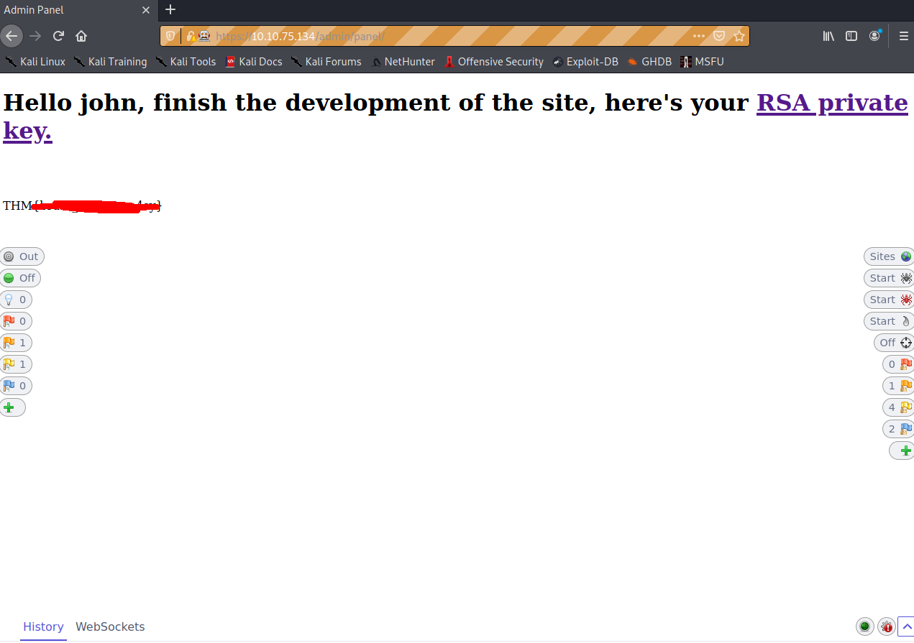
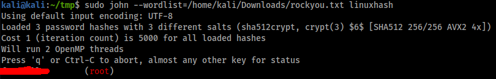

<- Go Back
TryHackMe Brute It Writeup
This isn’t a particularly difficult room but I didn’t see any writeups
currently made for it, (or at least accepted) so I decided to make one.
Also because I havent done any writeups before and this seemed like
a good place to start.Reconnaissance
First I started with a service scan with nmap
we see that ssh and apache are the only things running, this is a very
simple web server. Now lets bruteforce the web directories with gobuster.
The output we get shows a/admindirectory that we can acess and also
a/server-statusdirectory that we cant access.
Upon viewing the/adminwe get a login portal. Lets also check the html.
Upon viewing the source html we also see a comment addressed to a
john letting us know that the login username is admin.Getting User Access
Were going to have to bruteforce this login page, so lets make a more
efficient wordlist. Since we know the password is going to be 6 characters
long I filter the rockyou.txt wordlist to only contain passwords that are 6
characters long. This will save us time on the actual bruteforcing
process.
cat rockyou.txt | grep -x '.\{6,6\}' > 6rock.txtNow, Im going to use OWASP ZAP to bruteforce this login form as I find
working with hydra clunky and unreliable. If you arent familiar with
OWASP ZAP you can check out the very good TryHackMe room on it hereAfter you get ZAP running and intercepting traffic, make a test login, I
used the credentials admin:secret. Then in zap find that login request and
fuzz it.
then select the text that you want to be changed for every request, which
is going to be the password input. Then add the altered rockyou wordlist
as the payload.
It doesnt take too long for ZAP to find the password. Only 222 requests.
Sort the results by “code” in descending order so that when theres a
successful login its the first one.
Using the found credentials we can login to the admin page. Where we
will find our web flag and an RSA Private Key for the user john.

At first I didnt know how to crack this key with john, but a quick google
search with for “crack Proc-Type: 4,ENCRYPTED DEK-Info: AES-128” gave
me this blog post which detailed the steps required.
First we’ll need a python script to convert this key to something readable
by John the Ripper. As ssh2john didnt work with my jumbo version of john
I had to download a python script that would. (hyperlink)
githubusercontent.com/stricture/hashstack-server-plugin-jtr/master/scrapers/sshng2john.py
then run the script withpython3 sshng2john.py id_rsa > crackme
Theres some garbage data thats placed on the first line, go ahead and
manually delete it. The hash file to be used by john should only be one
line long. Your final output should look similar to this.
Then we can go ahead and crack this hash with John
Now that we have our ssh user and password lets login.
I initially got an error but another quick google search got me the answer
I needed. I had to change the rsa.key permissions with
chmod 400 rsa.key
After changing the permissions I was able to login just fine and get the
user flag.
Getting Root Access
The first thing I did was check for sudoable programs with
sudo -land from there I saw that we could runcatwith root access.
So then I just got the root flag withsudo cat /root/root.txt
But we also need the root password. So lets get the linux hashes and crack
them.sudo cat /etc/shadowandsudo cat /etc/passwdand save the
outputs to files on your own machine (can just copy and paste from the
terminal). I saved mine asshadowandpasswdrespectively. Then
prepare the hashes for john with
unshadow passwd shadow > linuxhash
and then we can crack with john
Conclusion
This was an easy but fun little room. It was the actually the first CTF that
I’ve done where you’ve been required to crack linux user hashes which was
nice.